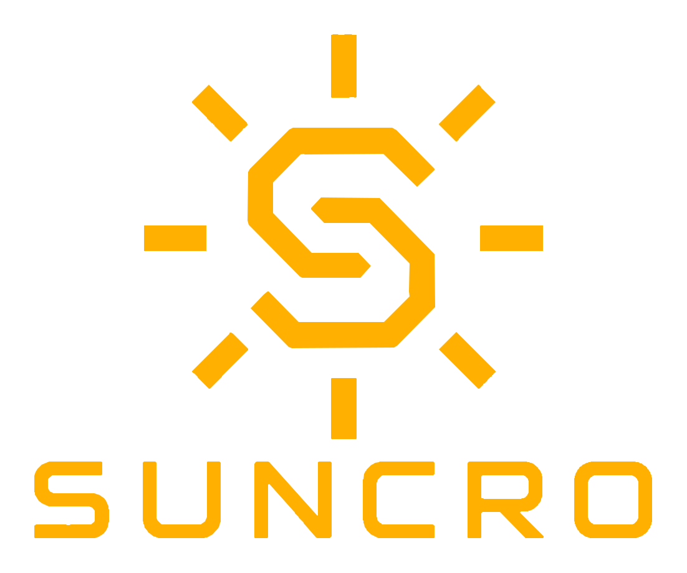
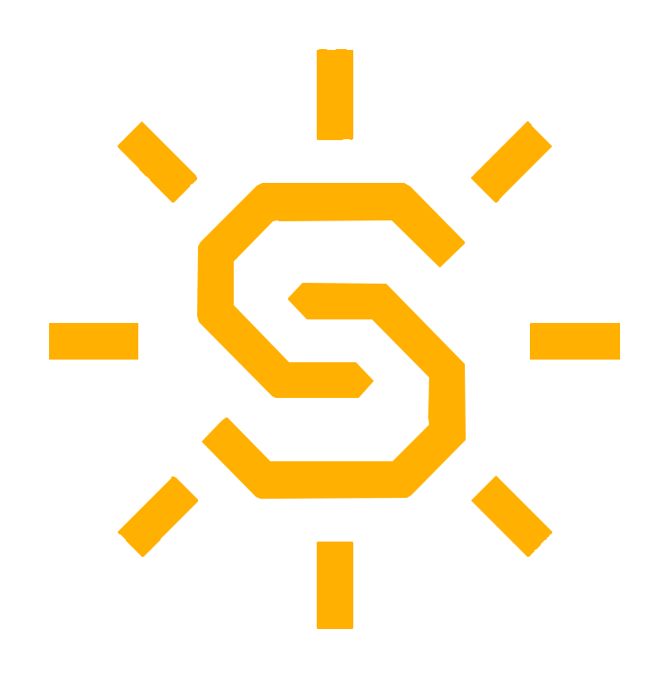

01
Built around the user
Clear controls, purposeful features and an experience that feels natural from day one.
Explore products ↗Engineering clarity into every detail
Pezic Tech Solutions develops focused, reliable products for people who expect more from technology.

SYSTEM READYIndependent engineering
02Purpose-built products
03Direct support
01 — OUR BRAND
SUNCRO is where thoughtful engineering meets everyday usability. A product ecosystem designed with a single goal: dependable performance without unnecessary complexity.
Clear controls, purposeful features and an experience that feels natural from day one.
Explore products ↗Every detail is considered, tested and refined for consistent results.
A flexible technology platform created to evolve alongside new needs.
02 — LIVE MONITORING
Follow irradiation, illuminance and daily solar energy in one clear view — live from the SUNCRO sensor.
Strong sun
Direct measurement via PYR20PYR20 energy3.08 kWh/m²
Estimated TSL energy2.99 kWh/m²
Maximum PYR20755 W/m²
Maximum illuminance29 849 lux
Strong light244 min
Direct sun181 min
Choose which SUNCRO device you want to view.
DAILY COMPARISON
Daily results stay exceptionally close, giving you confidence in every measurement.
Choose app language
See solar irradiance, ambient light and connection quality at a glance.
Daily energy, peak values and sunlight duration make every result easy to understand.
Day-to-day comparison showed exceptionally close agreement between the two sensors.

03 — PEZIC TECH SOLUTIONS
We are an independent technology company based in Germany, focused on turning strong ideas into products that solve real problems.
From early concept to product support, we stay close to the work—and even closer to our customers.
04 — SUPPORT
05 — CONTACT